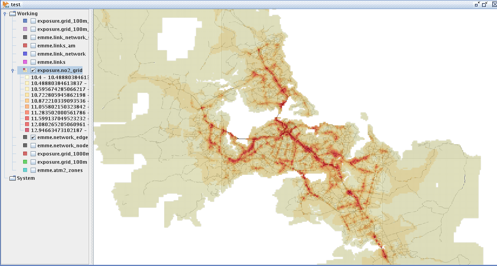

TOTUS database functions
The exposure schema in TOTUS holds all AQ mapping functions and tables.
Model NO2
The database function exposure.model_no2 has the following parameters:
- coeff: NO2 coefficient (numeric DEFAULT 0.00077)
- const: NO2 constant (numeric DEFAULT 10.4)
- cellSize: Grid cell size in meters (integer DEFAULT 100)
- roadCount: Number of roads to calculate TIF for (integer DEFAULT 20)
- dispersionFactor: The TIF dispersion factor (numeric DEFAULT (-0.65))
- forceTIF: Forcefully recreate TIF (boolean DEFAULT false)
When called without any parameters just apply the defaults and returns the results to OpenJUMP. The default results are cached in a database table exposure.no2_grid for efficiency and queries.
model_no2 first checks whether the grid for 100m exists in the database, if not it creates it for Auckland region (default) using create_grid (see below). It then checks whether the grid tif edges exist for 100m, if not it creates it using the 100m grid (create by create_grid) using grid_tif_edge (see below).
When trying out different number of roads to sample or the TIF dispersion factor, pass in forceTIF, last parameter as TRUE. This will remove the existing grid tif edges and recreate TIF with new parameters.
For finer control see functions below:
Grid
The TOTUS function exposure.create_grid has the following parameters:
- minx: start longitude (numeric)
- miny: start latitude (numeric)
- maxx: end longitude (numeric)
- maxy: end latitude (numeric)
- cellsize: Grid cell size in meters (integer)
- forcegrid: Forcefully recreate the grid (boolean DEFAULT false)
The default 100m grid is calculated by model_no2. For a custom NO2 run, eg. on 10m grid, first create the grid, else model_no2 will create it for all of Auckland, which will be slow for 10m.
Eg. for 100m this function creates the table grid_100m in the database that can be directly viewed using OpenJUMP.
TIF and TrafficModel
The TOTUS function exposure.grid_tif_edge
- cellsize: the grid to use, eg. grid_100m for 100 (integer)
- roadcount: the number of Traffic Model road edges (trafficmodel.network_edge)to calculate TIF for (integer)
- inclusiondistance: all roads further than this distance from center of grid cell will be included in TIF (integer)
- dispersionfactor: the distance based dispersion factor to apply (numeric)
Eg. for 100m this functions creates the table grid_100m_tif_edge which contains:
- grid_id: grid ID
- edge_id: the Traffic Model network id (same as network.edge from OSM)
- tif: TIF for edge
- rank: it's rank in grid, eg. 1 to 20
- geom: the Traffic Model edge geometry
This table can be directly viewed in OpenJUMP
TOTUS demo page
The TOTUS demo page can be viewed at totus.test.niwa.co.nz
TIF Summary
Can choose an area on map and retrieve TIF summary using 100m TIF grid edges, that is for all Traffic Model edges with TIF in overlapping grid cells.
It submits a query to feature server (middle ware), which in turn submits the spatial filter to the database function tif_summary which returns min, max, ave, count (grid/edge combination count) and sum to front end.
Cumulative TIF
Can choose a point on map and retrieve cumulative TIF using the following user parameters:
- dispersion factor, eg. -0.65
- number of roads to use, eg. 20
- distance from user defined point to include roads from. eg. 10m
This does not use any of the existing grids, instead it submits a call using the middleware (feature server) to the database function cumulative_tif, which has the following parameters:
- x: longitude (numeric)
- y: latitude (numeric)
- roadcount: number of roads to use for TIF (integer)
- dispfactor: dispersion factor (numeric)
- incldistance: distance at which to start using roads (integer)
This does the TIF calculation and accumulation on the fly.
The TIF function now supports generating TIF for multiple points, eg. SELECT id, x, y, value FROM exposure.cumulative_tif (ARRAY[174.70383862307, 174.71383862307], ARRAY[-36.874574479369, -36.884574479369], 20, -0.65, 10). This database function generates and executes the following SQL:
SELECT id,
x,
y,
SUM (volume * POW ((distance / COS (y) * 111319.9), -0.65)) AS tif,
ST_Multi (ST_Collect (DISTINCT geom)) AS geom
FROM (
SELECT p.id,
ST_X (p.geom) AS x,
ST_Y (p.geom) AS y,
en.network_id AS edge_id,
en.am_vol + en.ip_vol + en.pm_vol AS volume,
ST_Distance (p.geom, en.geom) AS distance,
RANK () OVER (PARTITION BY p.id ORDER BY ST_Distance (p.geom, en.geom)) AS rank,
en.geom
FROM trafficmodel.network_edge AS en
JOIN (
VALUES (1, ST_GeomFromText ('POINT (174.70383862307 -36.874574479369)', 4326)),
(2, ST_GeomFromText ('POINT (174.71383862307 -36.884574479369)', 4326))
) AS p (id, geom)
ON ST_IsValid (p.geom) = TRUE AND
ST_Expand (p.geom, 0.0201397760129886) && en.geom AND
ST_DWithin (p.geom, en.geom, 10/ (111319.9 * COS (ST_Y(p.geom)))) = FALSE
) AS c
WHERE rank < 20
GROUP BY id, x, y
id | x | y | value ----+-----------------+------------------+------------------ 1 | 174.70383862307 | -36.874574479369 | 2319.47771509307 2 | 174.71383862307 | -36.884574479369 | 846.340977797918
Using OpenJUMP to view TrafficModel-based AQ mapping
To do a NO2 model run:
Go to Layer -> Run Datastore Query:
SELECT id, tif, no2, ST_AsBinary (geom) AS geom FROM exposure.model_no2()
This will run the NO2 model with default values and create a 100m grid and calculated TIF for each cell's closest Traffic Model road edges.

{kind=link}